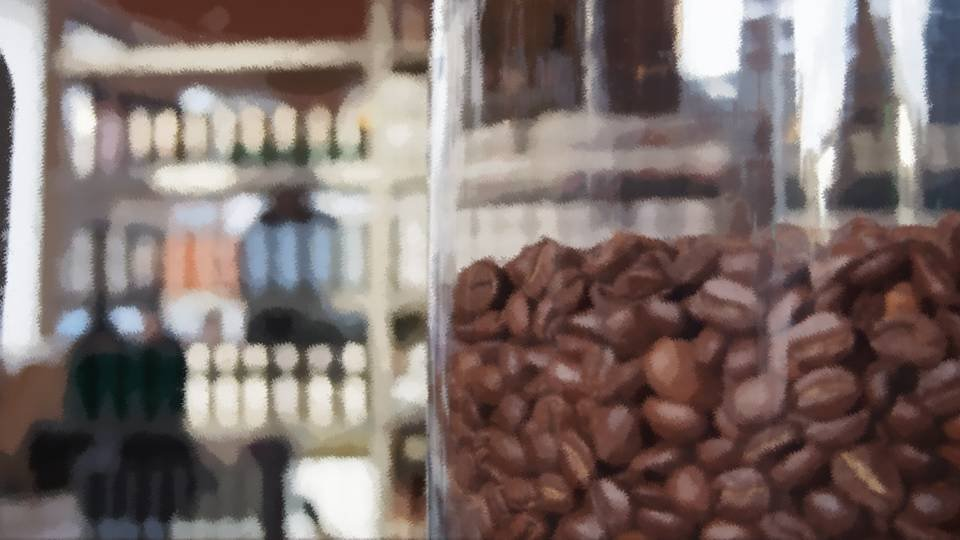

Script 00001AA5

"Two Beginner Coffees, please."
―Coming right up! Huh, that's a rare order.
"Yes, it's for a couple who don't care for coffee, Kanai-sama and her companion."
―Kanai-sama, huh. Come to think of it, it's always water and cake with her. A couple, so it's her boyfriend?
―Coming right up! Huh, that's a rare order.
"Yes, it's for a couple who don't care for coffee, Kanai-sama and her companion."
―Kanai-sama, huh. Come to think of it, it's always water and cake with her. A couple, so it's her boyfriend?
"Hmm, I wonder.
I don't mean to speak ill of a customer, but his looks are a bit..."
―Not very good-looking?
"I suppose... so. Enough that he doesn't quite match Kanai-sama..."
―I see. Well, 'there's no accounting for taste,' as they say.
"'There's no accounting for taste.' So you can never tell what people will like."
―But still, whatever kind of customer it is, we treat them with all the hospitality we've got. That's the heart of Primavera.
―Not very good-looking?
"I suppose... so. Enough that he doesn't quite match Kanai-sama..."
―I see. Well, 'there's no accounting for taste,' as they say.
"'There's no accounting for taste.' So you can never tell what people will like."
―But still, whatever kind of customer it is, we treat them with all the hospitality we've got. That's the heart of Primavera.
"Of course.
It's just..."
―Hm?
"It's just, the other customers seem to be looking at Kanai-sama's table with curious eyes..."
―Like, why is a beauty like Kanai-sama with a man like that?
"Yes. I just hope Kanai-sama and her companion aren't made to feel uncomfortable..."
―Hmm, this is one thing we can't step in on from our side...
―Hm?
"It's just, the other customers seem to be looking at Kanai-sama's table with curious eyes..."
―Like, why is a beauty like Kanai-sama with a man like that?
"Yes. I just hope Kanai-sama and her companion aren't made to feel uncomfortable..."
―Hmm, this is one thing we can't step in on from our side...
"Ah, then I'll go greet Kanai-sama once more.
Primavera has become famous as an upscale cafe, so if I treat her as a regular who has been coming since the day we opened, I'm sure the other customers will see them differently."
―Well, just don't make a big show of it. Treating every customer with equal hospitality is also the heart of Primavera, after all.
―Well, just don't make a big show of it. Treating every customer with equal hospitality is also the heart of Primavera, after all.
"Yes. Until a girl comes along that I can hand the star-girl title on to, I'll serve our customers with all my heart."
―I doubt you'll find many girls like you, though. Calling yourself the star girl of this shop isn't that easy, you know.
―I doubt you'll find many girls like you, though. Calling yourself the star girl of this shop isn't that easy, you know.
"No, I'm sure there's a woman right here in Motoki-cho who could be a more wonderful waitress than me.
Until she comes, I'll help out so this shop can become a fine one."
―Ha ha ha! Being able to say that much is what makes you a star girl. But still, someone at your level is pretty hard to... All set! Two Beginner Coffees for Kanai-sama, off you go!
―Ha ha ha! Being able to say that much is what makes you a star girl. But still, someone at your level is pretty hard to... All set! Two Beginner Coffees for Kanai-sama, off you go!